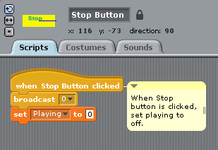
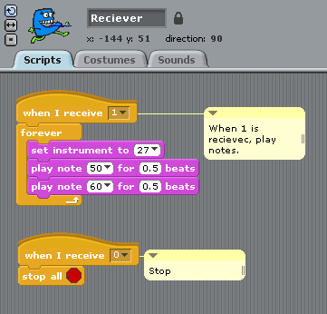
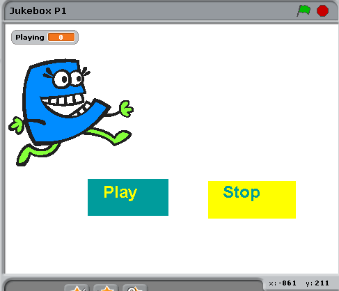
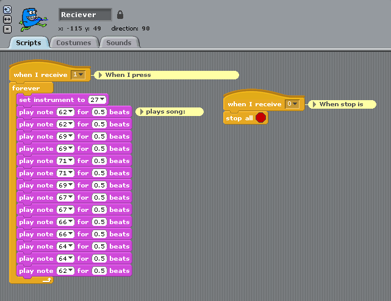
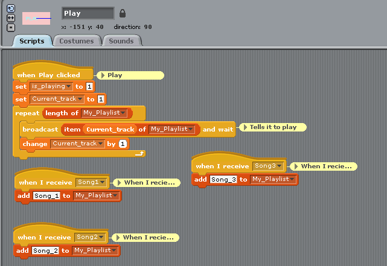
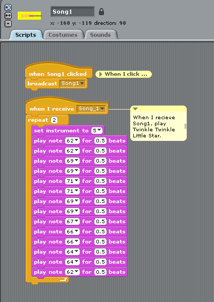
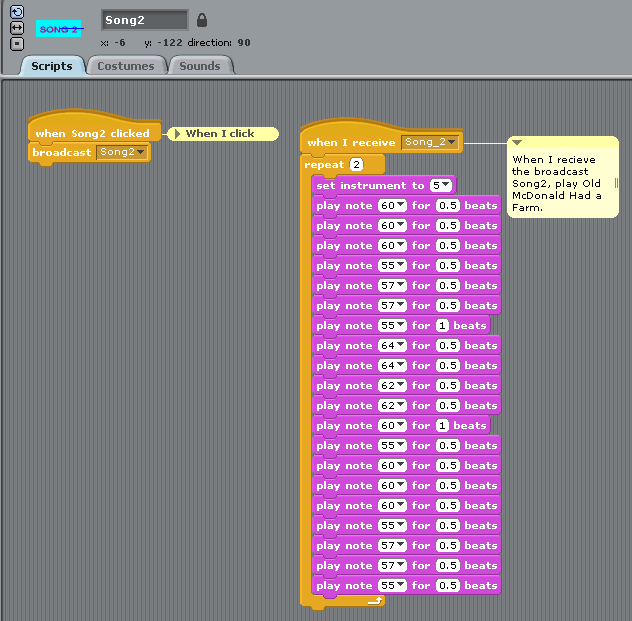
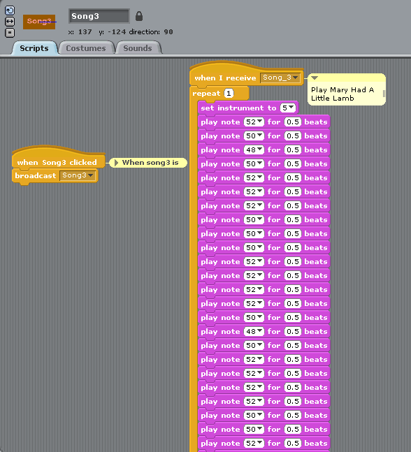
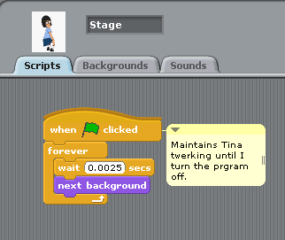
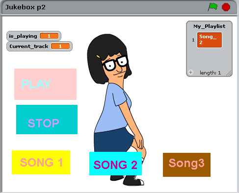

Program a jukebox on Stratch
Lets user play song from the beginning.
Lets user stop the song.
Include comments.
Clearly indicate when it is playing or stopped.
I created a play button by creating a sprite and drawing the shape. When the button is pressed, it sends out a broadcast that will be received else where. 0 will represent off and 1 on. When it is pressed it will also set Playing to on.
When the Stop button is pressed, it will broadcast 0, or off, and set it to off.
When the Receiver receives 1 from Playing, the sound will play. When the Receiver receives 0 from Stop, the sound will turn off.
This is what my sprints look like.
Here is my original song.
Here is where I show how they communicate with one another.
Here is where I show how they communicate with one another.
Here's the code for Old McDonald.
Here's the code for Mary Had A Little Lamb.
Here is when I changed my stage to a gif of Tina from Bob's Burgers.
Errors occured when trying to figure out the right tune. I overcame them by consulting with local violinists.